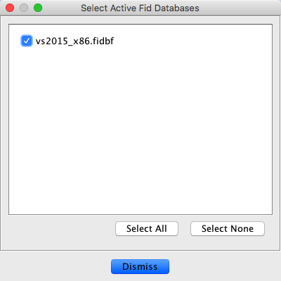
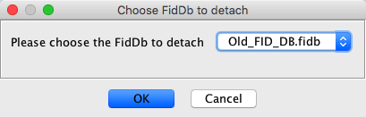
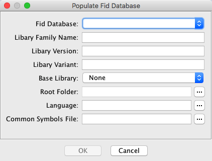

The Function ID Plug-in allows users to create new (.fidb) databases. A Function ID database is a collection of meta-data describing software libraries and the functions they contain. It is searchable via a hash computed over the body of unknown functions (See Function ID). The databases are self-contained and can be shared among different users. Using this plug-in, databases can be created, attached, and detached from an active Code Browser, and a database can be populated with function hashes from programs in the current Ghidra project.
A Function ID database may hold many distinct libraries. Within a single library, all functions must come from the same processor model as determined by Ghidra's Language ID. Ideally, functions should come from a single software component, all compiled using the same compiler and settings.
Functions for a single library can be ingested from multiple files, usually from a series of object files analyzed within a Ghidra repository. If the library is spread across multiple files, accurate symbol information is necessary to properly compute parent/child relationships.
All plug-in functionality is accessible from the Function ID menu, under the main Tools menu. In order to access this menu, the tool must be configured to include the Function ID plugin. To do this, from the Code Browser select
Then click on the Configure link under the Function ID section and check the box next to "FidPlugin".
The Function ID plug-in provides the following actions under Tools -> Function ID.
This brings up a dialog that allows the user to select which Function ID databases are active. By default, Ghidra ships with a set of databases and they are all initially active.
|  |
Once a database has been deactivated, it will no longer be used for matches in subsequent analysis. The selections for which databases are active are saved as a preference on a per-user basis.
This brings up a file chooser dialog that allows the user to create a new Function ID database. This cannot be located under the Ghidra install directory root, because Ghidra considers files under the root read-only. We recommend ending this database with the extension .fidb for consistency, although not strictly necessary. Newly created databases are attached (which means "known" for the purposes of tracking) and initially active, even though they contain no match entries.
This brings up a file chooser dialog that allows the user to attach an existing Function ID database. This cannot be located under the Ghidra install directory root, because Ghidra considers files under the root read-only. Attached databases are saved in the user preference system, and retain their active status across sessions of Ghidra.
This brings up a dialog that allows the user to detach an already-attached Function ID database. None of the databases delivered with Ghidra can be detached; they can only be deactivated (see “Choose active FidDbs...”). Detaching a database removes it from use in searching, and also causes the user preference system to forget about the existence of this database.
|  |
Once a database has been created (or attached), the user may populate it with hash values from a set of programs in the current project. Choosing this option brings up a dialog where users enter the information needed to populate the database.
|  |
Pick the database to populate. Users must select from attached databases that are writable.
The name of the library being ingested. This is the identifier that will be inserted as part of the comment when a match is found for functions in this library.
The formal version string for the library. This is frequently the <major>.<minor>.<patch> syntax but can be anything provided to distinguish between different versions of the same library.
Any other string for distinguishing libraries that doesn't fit in the formal Version string. This frequently holds compiler settings.
This is an optional setting for cross-linking with an existing library already ingested in the database. In the event that the user wants to incorporate parent/child relationships into this library from another related library, they can set this option to point at the other library. The library must already be ingested (from a previous use of this command) into the same database. The Function ID ingest process will match parents and children across the libraries via function symbols.
This specifies the set of programs from which the new library will be populated. The user can select any subfolder in the current Ghidra project. The ingest process will recursively search through all programs beneath this folder and, for each program, will collect any functions it contains.
This is the required 4-field Ghidra Language ID (i.e. x86:LE:64:default) specifying exactly what processor the new language will contain. While scanning during ingest, any program that does not match this program model will be automatically skipped.
This is an optional parameter that provides a list of common function symbols to the ingest process. The parameter, if present, is a path to a text file that contains the list of function symbols, one per line. The ingest process excludes these functions from consideration as disambiguating child functions. (See “False Positives”)
Once all fields have been filled, clicking OK causes all selected functions to be ingested for the new library. Depending on the number of programs and functions selected, this process may take some time. Upon completion, the process will present a summary window, containing ingest statistics and an ordered list of functions that were most commonly called within the library. This list can be used to create a Common Symbol File tailored for the library.
All functions going into a single Function ID Library must already be imported and analyzed somewhere within a single Ghidra repository (shared or non-shared). Multiple libraries contained within the same database can be ingested in different phases, but a single library must be written to the database in a single pass. The ingest dialog (see “Populate FidDb from programs...”) specifies a single subfolder as the root for the library. The process acts recursively, so there can be additional directory hierarchy under the root, but all programs to be included in the library must be under the one root.
All programs must be analyzed enough to have recovered the bodies of all the functions that are to be included
in the library. Generally, the easiest way to accomplish this is to run Ghidra's default auto-analysis.
If functions are spread across multiple programs, as is typically the case, users can run the
Ghidra's analyzeHeadless command to analyze across the whole set. However, take note below of some
of the modifications to the default analysis that may be necessary to get good Function ID results.
Every function to be included must have a non-default function name assigned.
Function ID uses a function's primary symbol for the name.
Symbols are typically imported from debug information, but any method for assigning
names, script based or manual, will work. Any function that still has its default name,
FUN_00...., currently will not be ingested.
When performing auto-analysis in preparation for ingest, its best to disable the Function ID analyzer (and the Library Identification analyzer as well) in order to avoid cross contamination from different databases. If the function symbols are mangled, be sure to turn off the Demangler analyzer. This lets the future database apply the raw mangled symbol to new programs during analysis, which lets their Demangler analyzer pass run with complete information.
For an example of these sorts of modifications to the analysis process, see the file:
Features/FunctionID/ghidra_scripts/FunctionIDHeadlessPrescript.java
This is designed to be passed to the analyzeHeadless command as a pre-script option.
A false positive in the context of Function ID is a function that is declared as a match by the analyzer but has the incorrect symbol applied. As with any classification algorithm, it is generally not possible to eliminate this kind of error completely, but with Function ID there are some mitigation strategies.
False positives for the most part only happen with small functions. There are two related causes with Function ID:
If a function consists of only a few instructions, it can be matched randomly if there are enough entries in the database. The fewer operations a function performs, the more likely an unrelated function is to do those exact same things.
A set of functions that are effectively
identical can have different names and be used in unrelated contexts.
Functions such as destructors are typical: one might
check that a particular structure field is non-zero, and then pass that
field to free. Another destructor may
perform the exact same sequence, but was designed for a completely unrelated structure.
In either case, Function ID can apply a symbol that is misleading for the analyst.
All mitigation strategies, to some extent, trade-off false positives for false negatives, which are functions that should have been reported by the Function ID analyzer, but aren't (because of some threshold or strategy).
Most false positives by far are due to tiny functions. Function ID minimizes these via the instruction count threshold. Potentially matching functions with too few instructions that don't exceed this threshold will simply not be reported by the analyzer.
For users experiencing too many false positives, the instruction count threshold is the easiest thing to adjust. It is fully controllable by the user as an Analysis option (See “Analysis Options”), and increasing it will directly reduce the false positive rate, at the expense of missing some true matches whose scores now fall below the threshold.
The default instruction count threshold is a good starting point for any new database, generally striking a reasonable balance limiting false positives without eliminating too many true matches. But even for an optimal threshold, there may be a small handful of functions in the new database (usually Code Idioms) that exceed the threshold and repeatedly cause the wrong label to be placed. Instead of increasing the threshold to filter out all functions with these higher scores, it is possible to turn on one of several mitigation strategies that target the offending database entries directly. These strategies include:
If this is set on an entry, the specific hash must match before the system will consider the entry as a potential match. This is useful when a code idiom contains a known constant that the full hash would usually miss.
This is probably the most useful specialized strategy. It forces at least one parent or child match to be present before the system considers the base function as a potential match. So even if an idiom is big, this forces a search for an additional confirmation.
This is a strategy of last resort. If an obnoxious code idiom can't be eliminated any other way, this forces the particular database entry to never be considered as a match.
This strategy is different from the others, in that it applies to function entries whose scores are slightly too low. If a low scoring function has an instruction sequence that is deemed unique enough, this strategy causes any potential match to automatically pass the threshold. This provides an alternative to lowering the instruction count threshold to include a particular function.
These strategies can all be toggled for individual function records in the database. To do this manually from the Code Browser, the user needs to search for the specific records they want to change using the Debug Search Window and then make changes from its Result Window. For details see “Debug Search Window”.
Strategies can also be toggled by running a Ghidra script. Within a script the basic instruction sequence looks like:
FidFileManager fidFileManager = FidFileManager.getInstance();
List<FidFile> allKnownFidFiles = fidFileManager.getFidFiles();
// Choose a modifiable database from the list
...
// Open a specific database
FidDB modifiableFidDB = fidFile.getFidDB(true);
// Toggle strategies based on the full hash of the function(s)
modifiableFidDB.setAutoFailByFullHash(0x84d01243dfb8b9cbL, true);
modifiableFidDB.setForceRelationByFullHash(0x4e0920960b48ae7eL, true);
modifiableFidDB.setForceSpecificByFullHash(0x5ef2f47ee7151243L, true);
modifiableFidDB.setAutoPassByFullHash(0x96a4a6fd5694523bL, true);
...
// Save and close the database
modifiableFidDB.saveDatabase("comment", monitor);
modifiableFidDB.close();
FunctionID hashes for specific functions can be obtained with the FIDHashCurrentFunction
script.